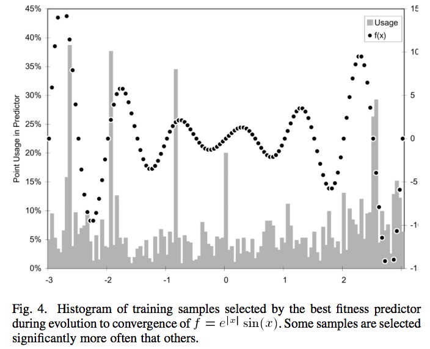

## Why do we care about games?
Multi-agent systems, such as:
- resource sharing between agents
- logistic/supply-chain networks
- computational auctions
- peer-to-peer systems
- transportation with multiple self-driving cars
## What is a game?
- Players
- Information
- Actions available to players
- Payoffs for outcomes
Chicken
Two agents are driving cars through an intersection and both want to reach their destination ASAP, but if both continue at their current rate they will collide.
| P1\P2 | S | D |
| S | 0,0 | -1,1 |
| D | 1,-1 | -10,-10 |
Actions: S, swerve, and D, drive
## Self-driving Cars and Pedestrians

## Strategies
A strategy is an option for what an agent may do given information about the game:
The algorithm a player will use to play the game
Prisoner's Dilemma
Two agents are interrogated about their involvement in a crime. They must decide whether to incriminate the other, or maintain silence and cooperate.
Actions: C, cooperate, and D, defect
## Game theory
- Much of modern game thoery stems from von Neumann and Morgenstern
- Model interactions mathematically (such as, predator-prey, parent-child, etc.)
- Payoff structure of a game helps inform strategy determination and understanding of expected dynamics
## Nash equilibrium
In a N-player game where every player knows the equilibrium strategy for every other player, *Nash equilibrium* is the situation when no player may improve by changing its strategy.
## Nash's existence theorem*
If players may adopt mixed strategies, then every game with a finite number of players and a finite number of strategies contains at least 1 Nash equilibrium
- *Pure strategy*: complete definition of game-playing behavior, determines action for all possible situations
- *Mixed strategies*: probabilistic combinations of pure strategies
## Games and Machine Learning
The framework of game theory can be used to reason about how strategic learning progress.
- Learning strategies for gameplay, such as RL for games
- Online learning and optimization tasks
## Game Theory and Ensembles
Combining classifiers into ensembles can be thought of as a cooperative game
- Assigning weights to the votes of classifiers game theoretically (weighted majority game)
- Optimal weight profile is the log-odds of classifier accuracy:
$w_i = log( \frac{ p_i }{ 1 - p_i })$
where $p_i$ is the accuracy of classifier $i$
Fitness Predictors and Competitive Games

Competitive games betweeen regressors and training sample subsets can improve the optimization of regressors (Schmidt and Lipson, 2008)
## Retrospective
Supervised learning
Unsupervised learning
Reinforcement learning
Features
Relationships between learning methods:
- Comparing supervised methods to supervised methods
- Comparing supervised methods to unsupervised methods
- Function approximation with supervised methods
## Quiz example question:
- An online auction website has 2 mechanisms that cause an auction to be concluded: a timer, and a target price
- They created a dataset using counts of listing keywords as features, and auction conclusion (no bids, time limit reached, or target price)
- Many auctions that conclude by reaching the time limit have final bids below the target price
- Auctions that conclude by a bid at the target price are more profitable for the website
1. Is it possible to help them?
2. How would you determine if it was?
3. What methods would you use?
## Assignment 5
See [Assignment 5](https://github.com/kephale/TuftsCOMP135_Spring2016/blob/gh-pages/Assignment5.md)
## What Next?
Quiz 2
Assignment 5 due 04/26
Project Presentations